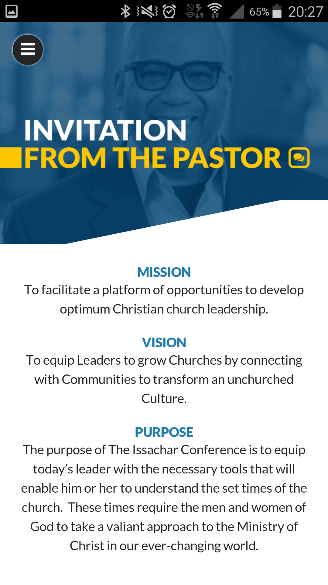
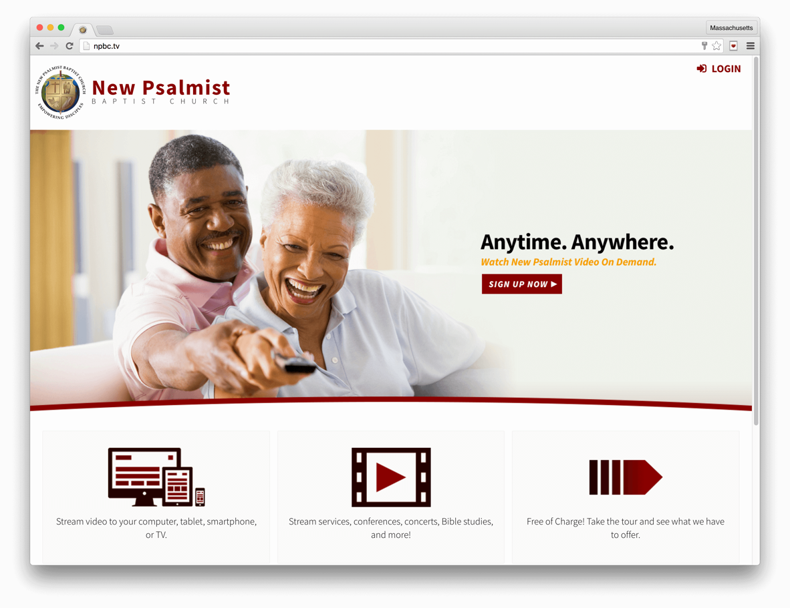

Past Work
Howdy, stranger! Feel free to take a look around.
Early 2016 · Working with The Church Online.

- Design by The Church Online; Mobile Development by me.
- Drupal Backend; Cordova Development utilizing Open Source Technologies and Intel XDK.
- Android and iOS versions available.
- Has offline mode for usage without Cellular Service.
2015 · Working with The Church Online.
- Design by The Church Online; Development by me.
- Backend connects with npbc.tv for video and live stream management.
- Custom PHP Backend for Video Sharing and Schedule Management.
Early 2016 · Working with The Church Online.

- Video On Demand and Management System for large Baptist Church with hundreds of terabytes of video data spanning decades.
- Design and Technical Collaboration with The Church Online; Web Development and Integration performed exclusively by me.
- Drupal 7 with Custom Modules, Responsive Theme and Design.
- API Integration with Sorenson Squeeze Server & Akamai ensuring for seamless video upload for clients and multi-bitrate encoded videos for users.
- Custom media queries; utilizes Zen for templating basics; Retina Ready.
- Manager Login for updating video meta (rename, delete, taxonomy, featured, publicity, etc.), sending push notifications to all apps & controlling video display on multiple other websites.
- Optional Merchant Services Implementation using Authorize.net ARB.
- Roku App with Rendezvous Authentication, Video on Demand, and Live Stream.
- Android and iOS apps with login, optional payment management, and cross-platform video playback.
- As of August 2016, you are free to sign up.
Mid 2015 · Working with The Church Online.
- Responsive Joomla Theme and Module Development for Baptist Church.
- Custom “Dear Bishop Thomas” Module for submitting, moderating, & displaying user submitted messages.
- Video integration from npbc.tv.
Mid 2015 · Working with The Church Online.
- Responsive Theme and Custom Video on Demand Application Development.
- Sketch, Mockup, Design, and Development by me.
- Merchant Services Integration for purchasing videos.
- When payment is posted and verified by Authorize.net, the video is immediately available to play for the user.
- API Integration with Sorenson Squeeze Server & Akamai ensuring for seamless video upload for clients and multi-bitrate encoded videos for users.
Late 2014 · Working with The Fold.
- Responsive Wordpress Theme Development for Pop-up Gallery in UK.
- Design by Corey Simons at The Fold; PSD to HTML5/CSS/jQuery and Theme Implementation by me.
- Retina Ready with SVGs and PNG fallback.